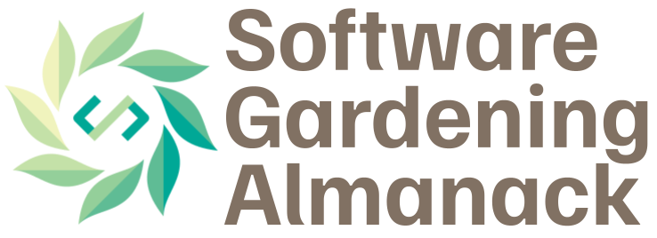
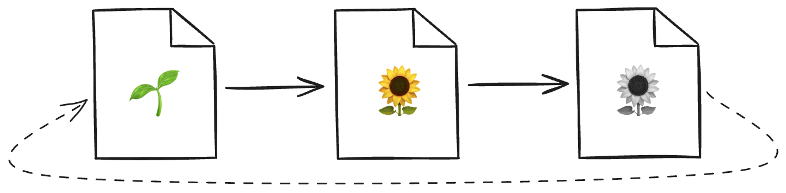
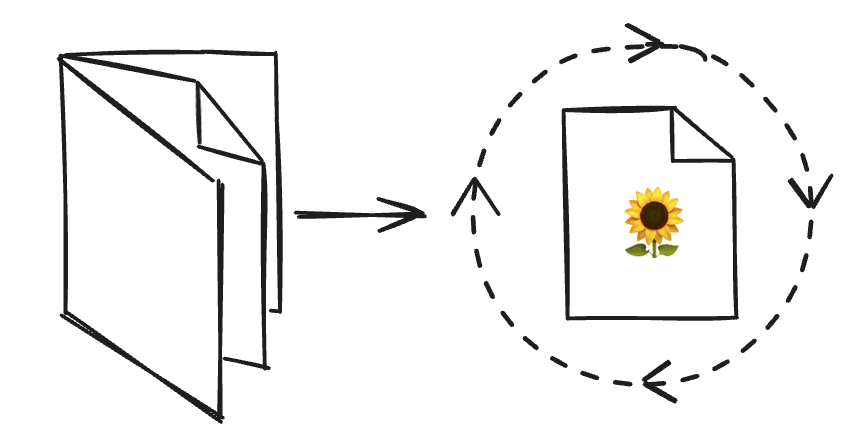

{kind=link}

Introduction#
Welcome to the Software Gardening Almanack, an open-source handbook of applied guidance and tools for sustainable software development and maintenance.
The Software Gardening Almanack is for anyone who creates or maintains software. The Almanack instructs individuals - software developers, engineers, project leads, scientists, and beyond - on best nurturing practices to build software that stands the tests of time. If you’ve ever wondered why software grows fast only to decay just as quickly, or how to design systems that sustain long-term innovation, this is for you. This handbook provides pragmatic guidance and tools to cultivate resilient software practices. Whether you’re tending legacy code or planting new ideas, jump in and start growing! 🌱
Overview#
The structure of the book includes the following core chapters:
The Garden Lattice: a chapter exploring the human-centric elements of software.
The Software Forest: a chapter examining code and its role in shaping software.
The Verdant Sundial: a chapter illustrating the evolution of people and code, and their impact on software sustainability.
In addition there are also supplementary chapters which help support or demonstrate the content found within the core chapters:
The Seed Bank: an applied chapter which illustrates concepts from the Almanack core through Jupyter notebooks.
The Garden Circle: a space where we openly document principles for developing and maintaining the book as well as document a related application programming interface (API) for the
almanackPython package.
Using the Almanack#
The Software Gardening Almanack project provides two primary components:
The Almanack handbook: the content found here helps educate, demonstrate, and evolve the concepts of sustainable software development.
The
almanackpackage: is a Python package which implements the concepts of the book to help improve software sustainability by generating organized metrics and running linting checks on repositories.
The almanack package#
Please see our (Seed Bank)[seed-bank-intro] Software Gardening Almanack Example for a quick demonstration of using the almanack Python package.
The package may be installed using the following, for example:
# install from pypi
pip install almanack
# install directly from source
pip install git+https://github.com/software-gardening/almanack.git
Once installed, the Almanack can be used to analyze repositories for sustainable development practices.
Output from the Almanack includes metrics which are defined through metrics.yml as a Python dictionary (JSON-compatible) record structure.
Package API documentation may be found within the package API section of the book.
You can use the Almanack package as a command-line interface (CLI):
# generate a table of metrics based on a repository
almanack table path/to/repository
# perform linting-style checks on a repository
almanack check path/to/repository
We provide pre-commit hooks to enable you to run the Almanack as part of your automated checks for developing software projects.
Add the following to your pre-commit-config.yaml in order to use the Almanack.
For example:
# include this in your pre-commit-config.yaml
- repo: https://github.com/software-gardening/almanack
rev: v0.1.1
hooks:
- id: almanack-check
Inspiration#

Fig. 1 Software is created, grows, and decays over time.#
Software experiences development cycles, which accumulate errors over time. However, these cycles are not well understood nor are they explicitly cultivated with the impacts of time in mind. Why does software grow quickly only to decay just as fast? How do software bugs seem to appear in unlikely scenarios?
These cycles follow patterns from life: software is created, grows, decays, and so on (sometimes in surprising or seemingly unpredictable ways). Software is also connected within a complex system of relationships (similar to the complex ecology of a garden). The Software Gardening Almanack posits we can understand these software lifecycle patterns and complex relationships in order to build tools which sustain or maintain their development long-term.
“The ‘planetary garden’ is a means of considering ecology as the integration of humanity – the gardeners – into its smallest spaces. Its guiding philosophy is based on the principle of the ‘garden in motion’: do the most for, the minimum against.” - Gilles Clément
The content within the Software Gardening Almanack is inspired by ecological systems (for example, as in planetary gardening). We also are galvanized by the scientific method, and almanacks (or earlier menologia rustica) in documenting, expecting, and optimizing how we plan for time-based changes in agriculture (among other practices and traditions).
{kind=link}

Fig. 2 Almanacks help us understand and influence the impacts of time on the things we grow.#
The Software Gardening Almanack helps share knowledge on how to cultivate change in order to nurture software (and software practitioners) for long periods of time. We aspire to define, practice, and continually improve a craft of software gardening to nourish existing or yet-to-be software projects and embrace a more resilient future.
Motivation#

Fig. 3 We depend on a delicate network of software which changes over time.
(Image source: ‘Dependency’ comic by Randall Munroe, XKCD)#
Our world is surrounded by systems of software which enable and enhance life. These systems are both invisible and sometimes brittle, breaking in surprising ways (for example, beneath uneven pressures as in the above XKCD comic). At the same time, loose coupling of these software systems also forms the basis of innovation through multidimensional, emergent growth patterns. We seek to embrace these software systems which are innately in motion, embracing diversity without destroying it to perpetuate discovery and enhance future life.
“Start where you are. Use what you have. Do what you can.” - Arthur Ashe
We suggest reading or using this content however it best makes sense to a reader.
Just as with gardening, sometimes the best thing to do is jump in!
We structure each section in a modular fashion, providing insights with cited prerequisites.
We provide links and other reference materials for further reading where beneficial.
Please let us know how we can improve by opening GitHub issues or creating new discussion board posts (see our contributing.md guide for more information)!
Who’s this for?#
“We’ll share stories from the heart. All are welcome here.” - Alexandra Penfold
The Software Gardening Almanack is designed for developers of any kind. When we say developers here we mean anyone engaging in pursuing their vision towards a goal using software (including scientists, engineers, project leads, managers, etc). The content will engage readers with pragmatic ideas, keeping the barrier to entry low.
Acknowledgements#
This work was supported by the Better Scientific Software Fellowship Program, a collaborative effort of the U.S. Department of Energy (DOE), Office of Advanced Scientific Research via ANL under Contract DE-AC02-06CH11357 and the National Nuclear Security Administration Advanced Simulation and Computing Program via LLNL under Contract DE-AC52-07NA27344; and by the National Science Foundation (NSF) via SHI under Grant No. 2327079.